Recetas Veganas Fáciles para el Día a Día
Deliciosas recetas 100% vegetales, fáciles de preparar y para toda la familia. En Danza de Fogones encontrarás cientos de recetas para que disfrutes de cada comida y sigas una alimentación con más vegetales.
Últimas Recetas
Estas son algunas de las últimas recetas que hemos publicado o actualizado en el blog con fotos nuevas, instrucciones paso a paso y trucos.
- 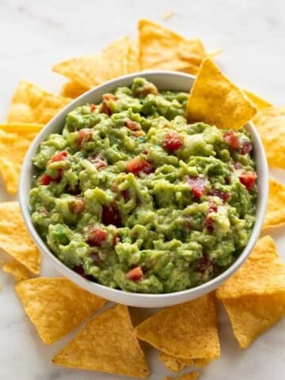
Cómo Hacer Guacamole Casero
- 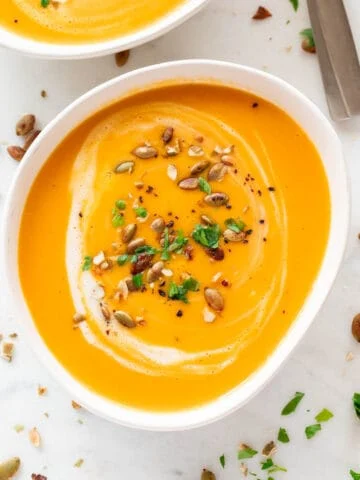
Crema De Calabaza Fácil
- 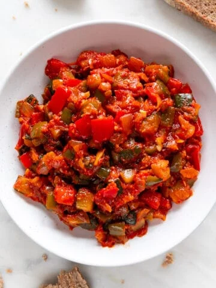
Cómo Hacer Pisto Manchego o
de Verduras Casero - 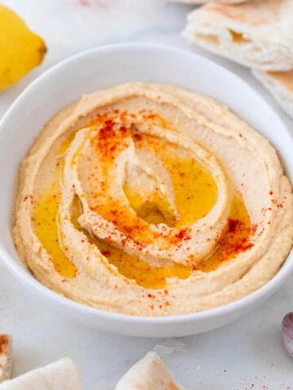
Cómo Hacer Hummus Casero de
Garbanzos
VER RECETAS DE...
- 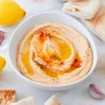
Aperitivos
- 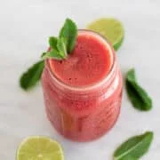
Bebidas
-
Desayunos
- 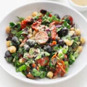
Ensaladas
- 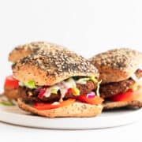
Plato Principal
- 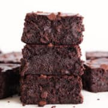
Postres
-
Tutoriales
- 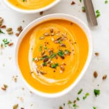
Otoño
Recetas Populares
Estas son las recetas más populares en el blog ahora mismo. ¡Échales un vistazo!
- 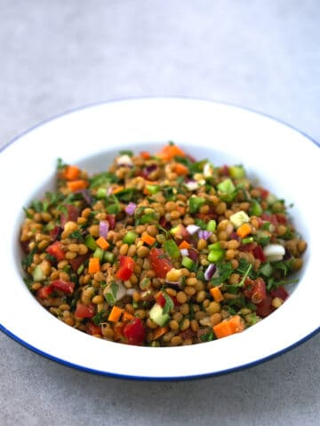
Ensalada de Lentejas

- 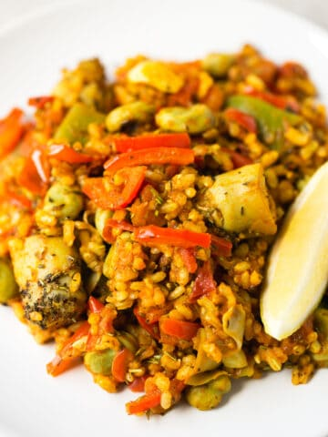
Arroz con Verduras
- 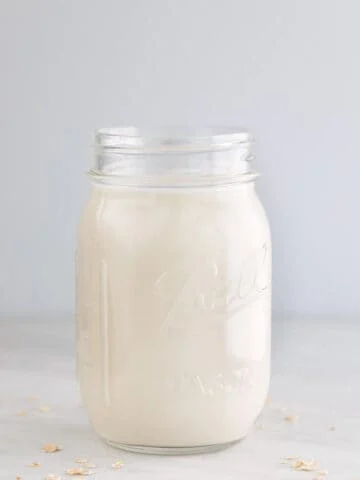
Cómo Hacer Leche de Avena
- 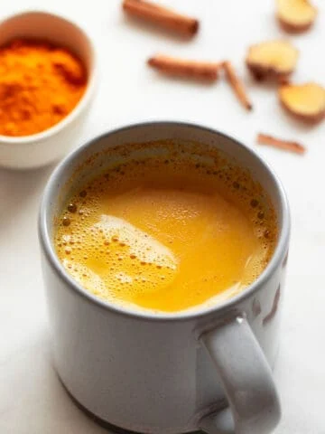
Leche Dorada
- 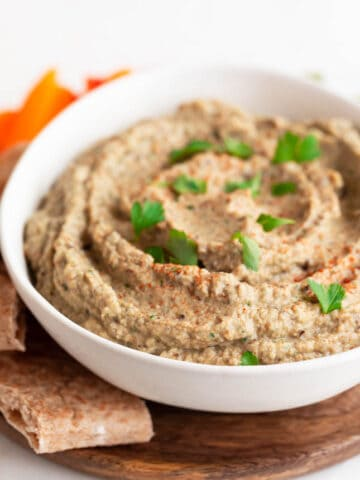
Baba Ganoush
- 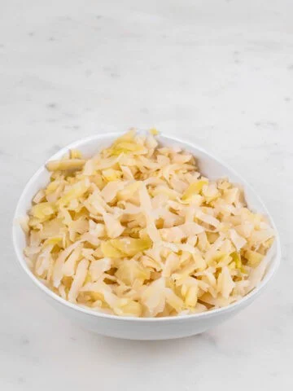
Cómo hacer Chucrut
- 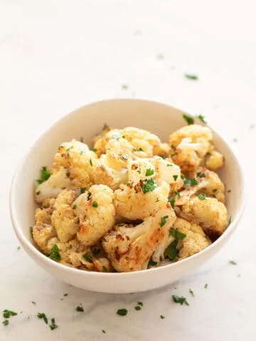
Puré de Coliflor

Cómo hacer Tahini
Recetas De Otoño
Da la bienvenida al otoño con estas reconfortantes recetas estacionales. Aquí encontrarás platos cálidos y reconfortantes, guisos fragantes, deliciosos postres con sabores de la temporada, y bebidas especiales para disfrutar mientras las hojas caen.
-
Coliflor al Horno
- 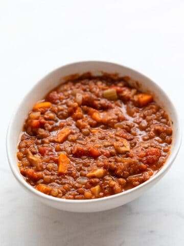
Sopa de Lentejas
- 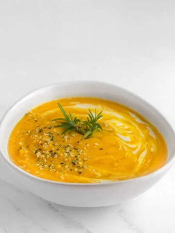
Crema de Verduras
- 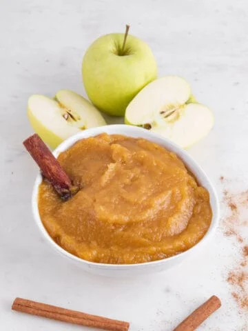
Compota de Manzana
Ver más Recetas de Otoño →
Sobre Yosune
¡Hola, soy Iosune! Llevo compartiendo recetas veganas sencillas y deliciosas en mi blog Danza de Fogones desde el año 2013.
Leer Más Sobre Mi →
Principales Veganos
En esta sección encontrarás platos principales 100% vegetales deliciosos y fáciles de preparar.
- 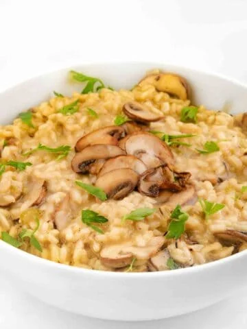
Risotto Vegano de Champiñones
- 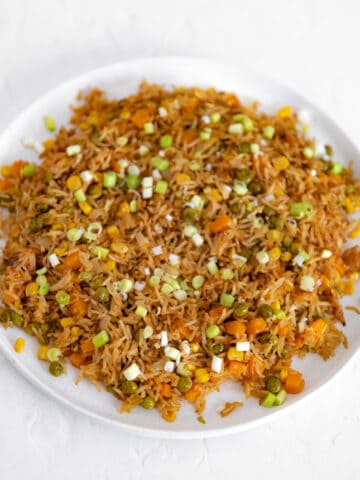
Arroz Chino Vegano
-
Quiche Vegana
- 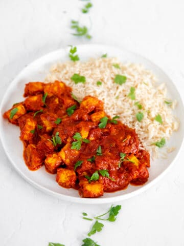
Tikka Masala Vegano
Ver más Platos Principales Veganos →
Postres Veganos
Si te apetece un dulce estás en el lugar adecuado. Elige entre casi 200 recetas de postres elaborados con productos de origen vegetal.
- 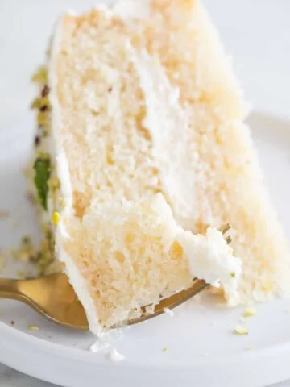
Tarta de Limón Vegana
- 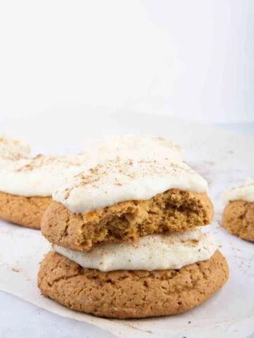
Galletas de Calabaza Veganas
- 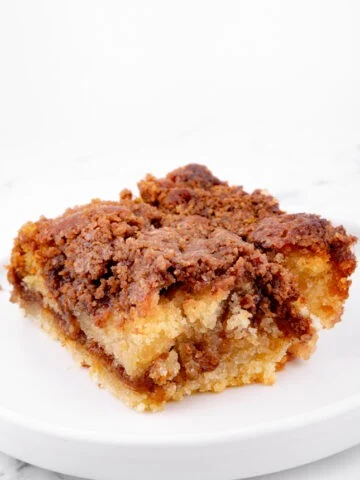
Coffe Cake Vegana
- 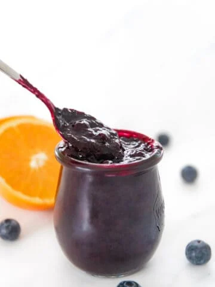
Marmelada de Arandanos
Ver más Postres Veganos →
Básicos Veganos
Dentro de esta sección hemos incluído tutoriales sobre cómo preparar recetas básicas caseras y cómo hacer de cero algunos ingredientes que usamos a menudo.
- 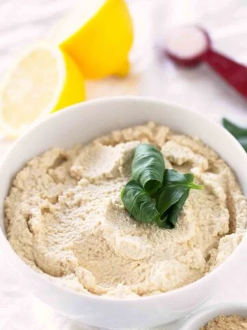
Ricotta Vegana
- 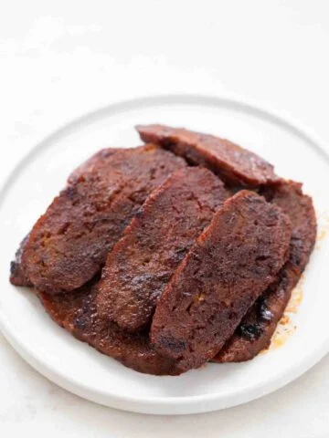
Bacon Vegano
- 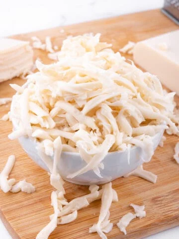
Mozzarella Vegana
- 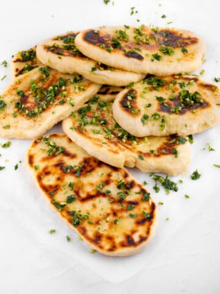
Pan Naan Vegano